GIS World
ArcGIS Engine二次开发整合
- 唯一值符号化
2019年6月20日
0. 前言：
空间数据的可视化表达是ArcGIS Engine二次开发的一个重要模块，emm反正就很重要啦~
最近实践周被安排到了利用ArcGIS Engine实现的各种不同方式的符号化任务，所以，我在这里也顺路记录以下我在实现唯一值符号化的实验过程啦~
1. ArcGIS Engine程序的前期准备
由于这次的ArcGIS Engine程序（下文简称AE）的功能是具有方向性的（符号化），因此在设计初期仅添加以下必要的功能命令即可。
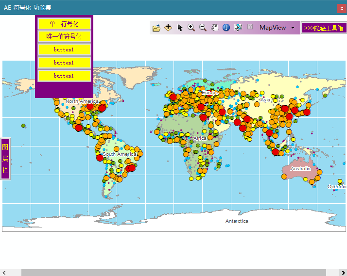
上图是AE的整体设计，右上的控件为Toolbar控件和控制Toolbar显示隐藏的按钮；左侧为TOOC控件显示按钮，仅需鼠标接触即可显示，鼠标离开后自动隐藏；左上为该AE程序的主体，负责装载不同方式的符号化功能，其容器为panel控件，可使用鼠标下拉上推进行显示可隐藏。
2. 唯一值符号化代码中期准备过程
首先，将整个唯一值符号化功能封装到AE提供的ICommand接口类中，该ICommand接口负责钩取AE程序里的MapControl控件对象，并通过点击进入唯一值符号化功能，具体如下图所示
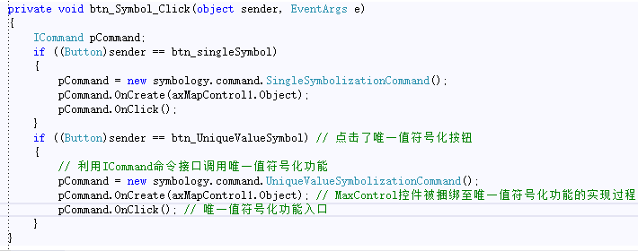
下图是用以进行唯一值符号化功能实现的自定义Command类的一些基本信息，
其中包含两个私有属性成员，
分别是IHookHelper接口引用和IMapContorl2接口引用，
另外值得注意的是，在自定义Command类时，需要添加引用ESRI.ArcGIS.ADF.BaseClasses，
并使自定义的Command类继承自BaseCommand类
在重写的OnCreate()方法中，
需要对捆绑过来的对象进行类型检查在赋值给IHookHelper接口引用的钩子，
比如说在Comand命令是寄存在Toolbar控件中，那么在调用该命令时，传进来的钩子hook是属于ToolbarControl这个类的，
如果不进行区分处理，直接对这个钩子进行强类型转换为IMapControl2接口类型赋值过出，会出现null值的情况，
因此这时候需要先将钩子类型强类型转换为ToolbarControl类型，并通过其伙伴控件属性Buddy作为真正的钩子赋值给IMapControl2接口引用
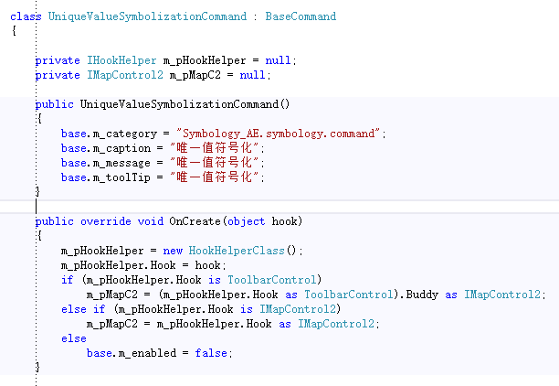
接下来是该自定义Command命令类的OnClick()方法，这是实现唯一符号化的主要方法，
下图是该方法的的代码，从中我们可以看到，方法通过两个if语句来剔除进行唯一值符号化的功能，分别是IMapControl接口为空和IMapControl接口所引用的Map（数据框）没有图层，
当通过两个if语句检查均没有进行方法的提前返回结束，就进入唯一值符号化的实现阶段，
唯一值符号化实现阶段被封装到了一个窗体类里，以实现交互式。
在实例化窗体类的时候将钩取MapControl控件的钩子引用作为参数传进在窗体类，即告诉该窗体对象在接下来的符号化功能实现中均作用在该参数里。
另外，我们还看到在Show()打开窗体方法中也携带了钩子参数，经过试验，直接.Show()不带参数也是可以实现唯一值符号化的😀。
 方法.PNG)
3. 唯一值符号化代码的具体实现过程
现在，我们做完了唯一值符号化功能的准备工作，接下来，就是具体的实现过程了。
整个实现过程依托在一个窗体中，下图是该窗体的一个布局。控件包含负责装载图层和选择符号化图层的ComboBox控件、负责装载和选择唯一值符号化字段的ComboBox控件、实施唯一值符号化的按钮以及关闭按钮。
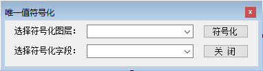
下面我们来看下该窗体类的一些成员，首先是属性。如下图所示，
分别是包含负责接收和传递给钩子的IHookHelper接口引用、表示当前视图状态的IActiveView接口引用、表示当前数据框的IMap接口引用、需要进行唯一值符号化的要素图层IFeatureLayer引用和进行唯一值符号化的指定字段。
并在该窗体类初始化的时候，使用窗体初始化传进来的IHookHelper接口引用进行初始化。
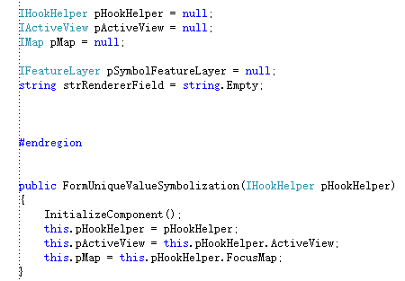
进行唯一值符号化的第一步是选择图层，因此，在唯一值符号化窗体开启时，
要在窗体启动事件中将要进行符号化图层的可选项均加入至ComboBox控件中，
同时在选择图层使也要触发ComboBox控件选择项改变事件，以此来获取和更新唯一值符号化的字段可选值在另一ComboBox的体现。
另外也要更新窗体对象中表示当前需要进行唯一值符号化的的图层，唯一值符号化字段默认选择第一项。
存储唯一值符号化字段可选值的ComboBox控件同理。
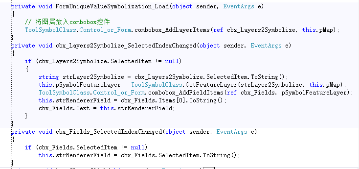
从上图中我们可以看到，关键的代码实现环境都被封装到了ToolSymbolClass类里，方法均为静态，，其中动用到控件的则在ToolSymbolClass类的基础上深一步封装到Control_or_Form嵌套类中。
这样有利于符号化功能代码的统一管理和复用。
就将符号化可选图层载入ComboBox控件的方法，其实现过程需要按址传入ComboBox控件对象和IMap引用作为参数。
然后使用IEnumLayers接口（图层迭代器）对IMap中的所有图层进行遍历，将符合要素类要求的图层名添加至ComboBox中。
就将符号化可选字段载入到ComboBox控件的方法，其是实现过程首先是参数的传入，ComboBox的传入方式要按址传入，以实现实时的更新，
另外还需要符号化图层参数。接下来是方法的具体实现，首先是获得给定IFeatureLayer要素图层参数所指向的FeatureClass数据源的所有字段，以IFields接口进行引用（需要引用ESRI.ArcGIS.Geodatabase）。
然后利用循环遍历每一个IFields的每一个IField引用，将符合条件的字段名添加至ComboBox中。
下图是上述两个方法的代码实现过程图
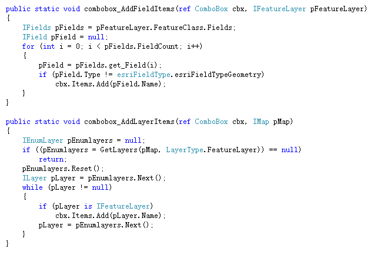
另外在进行唯一值符号化图层的选择后，这里进行标识ComboBox里的选择，还需要更具ComboBox但选择的图层名获取出图层要素赋值给IFeatureLayer引用以进行渲染，下图是实现方法和详细的注记过程
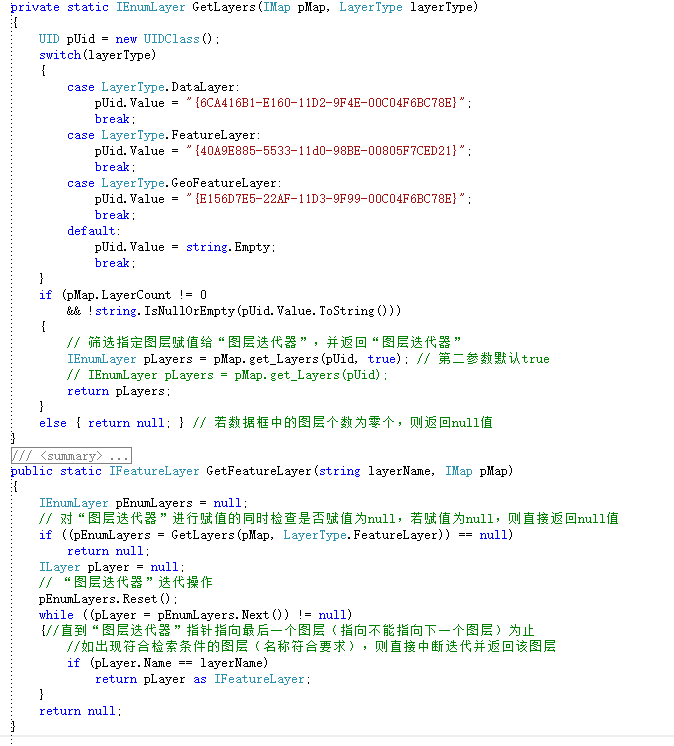
当选定的需要进行唯一值符号化的图层和字段后，下一步就是点击符号化按钮进行符号渲染。
下图是点击事件，具体的的渲染方法被封装到了ToolSymbolClass类中，渲染方法的参数携带了IActiveView接口引用、需要进行符号化的图层IFeatureLayer引用以及需要进行唯一值区分的字段字符串类型
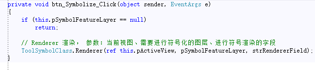
4. 关键步骤
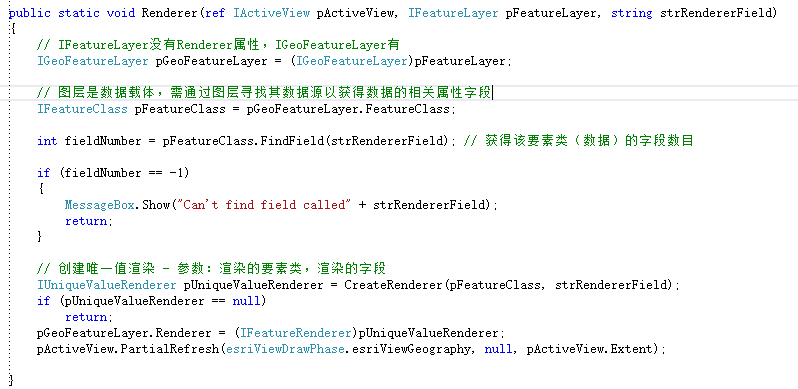
上图是渲染方法的具体实现过程：首先是获得需要进行符号化的要素类的字段数目，以检查符号化的要素类是否为空的要素类，是则直接返回结束方法。
然后根据唯一值符号化图层和唯一值符号化字段创建唯一值渲染接口以备进行唯一值符号化操作。实现过程被封装称方法，具体如下图。
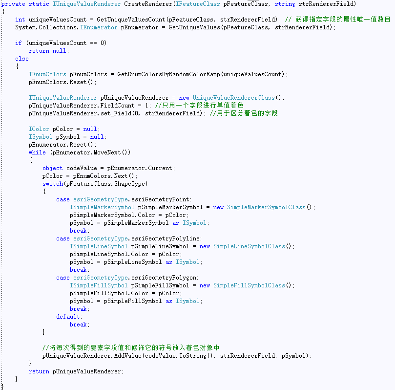
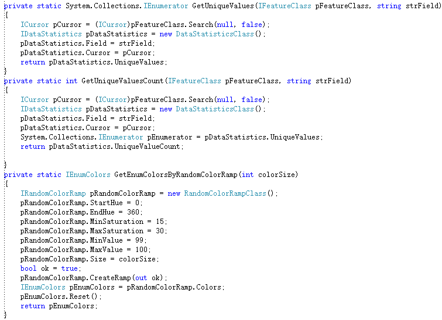
5. 总结
嗯，写得很水哈哈哈哈😄
直接分享程序算啦~